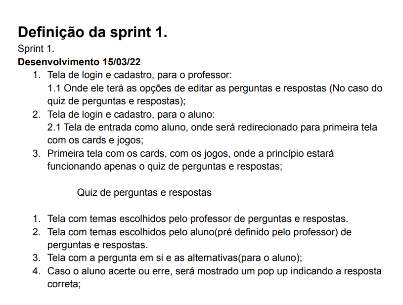
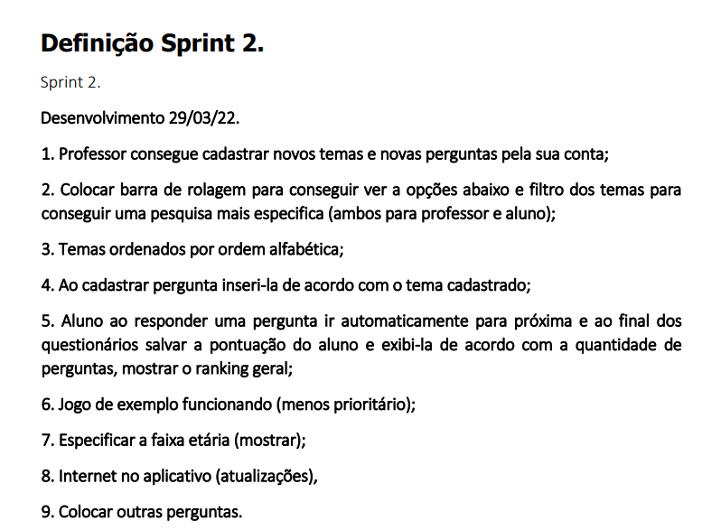
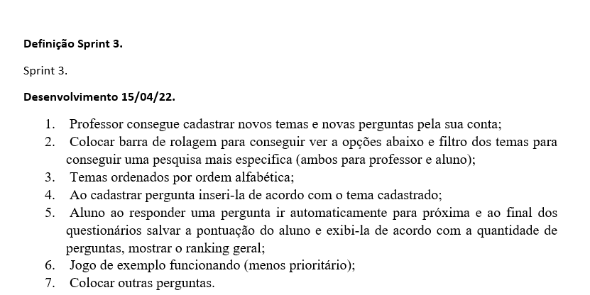
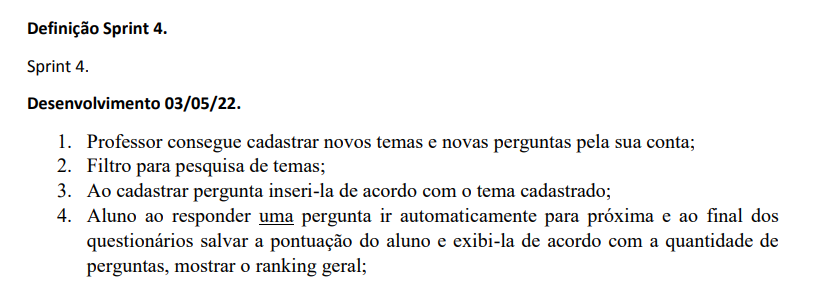
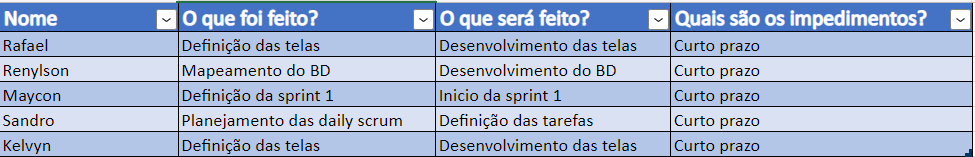

Sprints

Sprint 1
-O desenvolvimento da sprint 1 estava para desenvolvimento até dia 15/03/2022, com os seguintes tópicos para a entrega:
1.Tela de login e cadastro, para professor:
-1.1 Onde ele terá as opções de editar as perguntas e repostas(No caso do quiz de pergunta e respostas);
2.Tela de login e cadastro, para o aluno:
-2.1 Tela de entrada como aluno, onde será redirecionado para primeira tela com os cards e jogos;
3.Primeira tela com os cards, com os jogos, onde a princípio estará funcionando apenas o quiz de perguntas e respostas.
Quiz de perguntas e respostas
-1. Tela com temas escolhidos pelo professor de perguntas e respostas;
-2. Tela com temas escolhidos pelo aluno(pré definido pelo professor) de perguntas e respostas;
-3 Tela com a pergunta em si e as alternativas(para o aluno);
-4 Caso o aluno acerte ou erre, será mostrado um pop up indicando a resposta correta.
-O time de desenvolvimento conseguiu concluir e cumprir com o prazo da Sprint 1 sem nenhum empecilho.
Como pode ser observado na imagem abaixo, a documentação da primeira sprint: 
Sprint 2
-O desenvolvimento da sprint 1 estava para desenvolvimento até dia 15/03/2022, com os seguintes tópicos para a entrega:
1. Professor consegue cadastrar novos temas e novas perguntas pela sua conta;
2. Colocar barra de rolagem para conseguir ver a opções abaixo e filtro dos temas para
conseguir uma pesquisa mais especifica (ambos para professor e aluno);
3. Temas ordenados por ordem alfabética;
4. Ao cadastrar pergunta inseri-la de acordo com o tema cadastrado;
5. Aluno ao responder uma pergunta ir automaticamente para próxima e ao final dos
questionários salvar a pontuação do aluno e exibi-la de acordo com a quantidade de
perguntas, mostrar o ranking geral;
6. Jogo de exemplo funcionando (menos prioritário);
7. Especificar a faixa etária (mostrar);
8. Internet no aplicativo (atualizações);
9. Colocar outras perguntas.
-Nessa sprint, ocorreram os primeiros empecilhos, onde o problema foi a comunicação do banco com a aplicação, deixando certas atividades sem continuidade até que o banco conseguisse se comunicar com a aplicação. 
Sprint 3
1. Professor consegue cadastrar novos temas e novas perguntas pela sua conta;
2. Colocar barra de rolagem para conseguir ver as opções abaixo e filtro dos temas para conseguir uma
pesquisa mais especifica(ambas para professor e aluno);
3. Temas ordenados por ordem alfabética;
4. Ao cadastrar pergunta inseri-la de acordo com o tema cadastrado;
5. Aluno ao responder uma pergunta ir automaticamente para próxima e ao final dos questionários salvar a
pontuação do aluno e exibi-la de acordo com a quantidade de perguntas, mostrar o ranking geral;
6. Jogo de exemplo funcionando (menos prioritário);
7. Colocar outrar perguntas.
-Nessa sprint, ocorreram outros empecilhos, onde o problema foi o framework, onde o ocorreram muitos problemas de compatibilidade deixando as atividades sem continuidade, por outro lado a implementação do banco foi terminada faltando apenas a conexão com o servidor. 
Sprint 4
1. Professor consegue cadastrar novos temas e novas perguntas pela sua conta;
2. Filtro para pesquisa de temas;
3. Ao cadastrar pergunta inseri-la de acordo com o tema cadastrado;
4. Aluno ao responder uma pergunta ir automaticamente para próxima e ao final dos
questionários salvar a pontuação do aluno e exibi-la de acordo com a quantidade de
perguntas, mostrar o ranking geral;
-Essa sprint está em desenvolvimento ainda, conversando com o time de desenvolvimento e analisando a atividade à serem entregues, a equipe optou por remover certas atividades que não seriam de importancia para o projeto.

Backlog
 -Nesse Backlog, está prezente atividades da sprint 1 e também o inicio da implementação do Banco de dados.